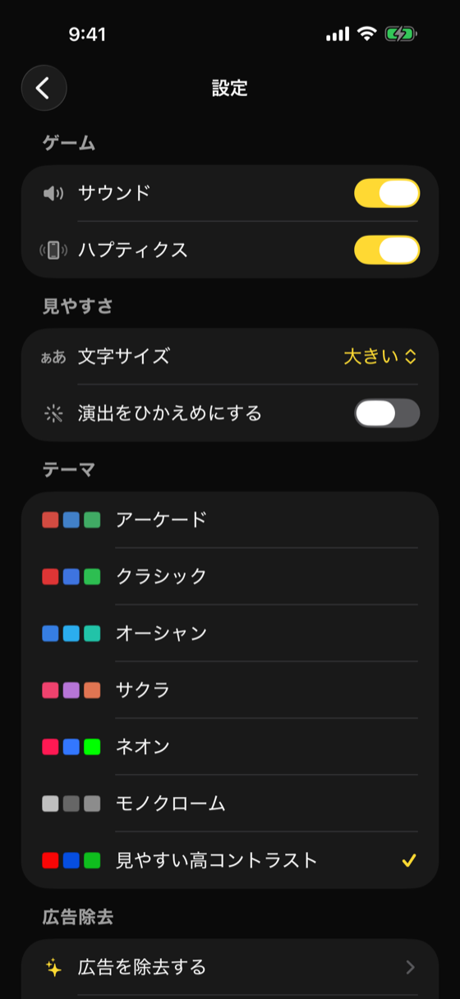

サウンド・ハプティクス・テーマ・課金

| セクション | 項目 |
|---|---|
| サウンド | 有効/無効トグル |
| ハプティクス | 有効/無効トグル |
| カラーテーマ | 5種類から選択（クラシック/オーシャン/サクラ/ネオン/モノクロ） |
| 課金 | 「広告を除去」 / 「購入を復元」 |
| アプリ情報 | バージョン v1.2 (build 15) |
| 操作 | 遷移先 |
|---|---|
| 「広告を除去」 | PaywallView |
| バージョン | 日付 | 変更内容 |
|---|---|---|
| 1.0 | 2026-05-09 | 初版作成 |
| 1.1 | 2026-06-10 | 画面イメージ（fastlane snapshot 自動撮影）を追加 |